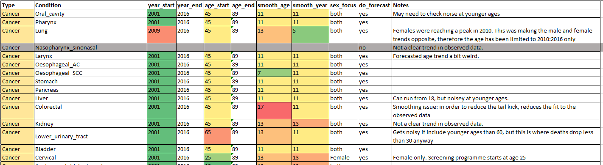

mort_rates.RmdThis vignette describes how cause-specific mortality data is used in the new Sheffield Tobacco and Alcohol Policy Model (STAPM). STAPM covers a range of applications and is not really a single model, but a collection of code and data that can underlie different modelling approaches and projects. Thus, this code describes the mortality data and code written to process it to facilitate these applications.
To inform the rates of mortality We use Office for National Statistics mortality microdata. These data are used to examine conditions that have been classed as partially attributable to the consumption of tobacco and to put this in the context of deaths from all other causes. We use data from 2001 (being the first year for which estimates by Index of Multiple Deprivation quintile are available) to the latest available. We calculated death rates and later use lifetable methods to estimate the consequent years of life lost to death from each condition.
These are mid-year population sizes
- 326 lower tier LAs
- IMD quintiles
- sex
- Age groups single year of age then 100+
- 2001-latest available
- Population Counts
The data is stored on and accessed via a University managed secure virtual machine heta_study. This machine is accessible only from the office workstation IP addresses of named individuals via a password protected login.
Ethics approval was received for ‘Investigation of the geographic and socioeconomic variation in alcohol and tobacco related mortality to inform decision support models for policy’ on 25/09/2018 from the School of Health and Related Research at the University of Sheffield with reference number 023092.
We first calculate the 1 year cental rates of death for specific ICD code categories for specific population subgroups. To prepare the death rates from tobacco related diseases for England we first aggregate the death counts by age, sex, IMD quintile and year and single ICD-10 codes.
Deaths in the mortality data are assigned a single ICD-10 code e.g. C00, but for our analysis we need to group these into cause-groups according to the groups in table 2.1 e.g. C00-C06. To do this, we create a new column that defines each group by its consituent ICD-10 codes e.g. C00, C01, C02, C03, C04, C05, C06. These are stored in mort.tools::tob_icd10_lookups. We then use the function tobalcepi::ExpandCodes() to convert these data to ‘long’ form, which we use to map the single ICD-10 codes to disease groups.
We then use the function mort.tools::GroupCauses() to aggregate the cause of death counts by disease group (searching for 3 and 4 character ICD-10 matches).
See the tobalcepi package’s vignette for smoking disease risks for an explanation of why and how we split the rates of death from oesophageal cancer into the Squamous cell carcinoma and adenocarcinoma subtypes. The data for splitting is in mort.tools::oesoph_splits and the function that does the splitting is mort.tools::SplitOesoph().
To illustrate how to use this code to view the trends over time in the rates of mortality from tobacco related disease, the code below calculates the mortality rates
# install.packages("//tsclient/X/ScHARR/PR_STAPM/Code/R_packages/mort.tools_1.0.0.zip", # repos = NULL, type = "binary") # install.packages("//tsclient/X/ScHARR/PR_STAPM/Code/R_packages/tobalcepi_0.1.0.zip", # repos = NULL) library(mort.tools) library(tobalcepi) library(stringr) # Prepare the death rates from tobacco related diseases for England # Load the population counts by age, sex, IMD quintile, local authority, year pop_data <- ReadPopData(path = "D:/Death and population data") # Load the death counts by age, sex, IMD quintile, local authority, year and cause data <- ReadData(path = "D:/Death and population data") # Select only England data <- data[str_sub(laua, 1, 1) == "E"] pop_data <- pop_data[str_sub(laua, 1, 1) == "E"] # Collapse local authority splits to national level data <- data[ , .(n_deaths = sum(n_deaths, na.rm = T)), by = c("year", "age", "sex", "imd_quintile", "icd10")] pop_data <- pop_data[ , .(pops = sum(pops, na.rm = T)), by = c("year", "age", "sex", "imd_quintile")] # Generate the relevant lookup file lookups <- ExpandCodes(tob_icd10_lookups) # Group death data into causes data <- GroupCauses(data, lookups, strat_vars = c("year", "age", "sex", "imd_quintile")) # Where there have been no deaths from a particular cause within a particular subgroup, # add new rows that have n_deaths = 0 domain <- data.frame(expand.grid( year = unique(data$year), age = unique(data$age), sex = unique(data$sex), imd_quintile = unique(data$imd_quintile), cause = unique(data$cause) )) setDT(domain) data <- merge(domain, data, by = c("year", "age", "sex", "imd_quintile", "cause"), all.x = T, all.y = F) data[is.na(n_deaths), n_deaths := 0] # Merge the deaths and population counts data <- merge(data, pop_data, by = c("year", "age", "sex", "imd_quintile"), all = T) # Calculate the central death rates data[ , mx_cause := n_deaths / pops]
To illustrate the trends in the death rates, begin by selecting the rates from one disease (here will choose lung cancer) and calculating the age-standardised death rate, stratified by year, sex and quintiles of the Index of Multiple Deprivation. For the age-standardisation, the package mort.tools contains the 2013 European Standard Population in esp2013, which provides a standard set of weights for calculating average mortality across all ages. Figure 1 shows that lung cancer death rates have been falling for males but rising slightly for females - a trend that warrants further investigation. There are many possible ways of visualising these data, including
The high dimensionality of these data and the number of possible ways to visualise, and their relevance for policymaking, suggests that making an online tool e.g. a Shiny app might be useful (cf. the DH PRP project).
# Figure 1 library(ggplot2) # Create age categorys for merging with the European Standard Population data[, agegroup := c( "0-4", "5-9", "10-14", "15-19", "20-24", "25-29", "30-34", "35-39", "40-44", "45-49", "50-54", "55-59", "60-64", "65-69", "70-74", "75-79", "80-84", "85-89", "90+" )[findInterval(age, seq(0, 90, 5))]] data <- merge(data, esp2013, by = "agegroup") # Calculate age-standardised mortality rates per 100,000 people for lung cancer # by year, sex and IMD quintile lungc_rates <- data[cause == "Lung", .(stdrate = 1e5 * sum(mx_cause * ESP2013) / sum(ESP2013)), by = c("year", "sex", "imd_quintile")] # Plot ggplot(lungc_rates) + geom_line(aes(x = year, y = stdrate, colour = imd_quintile)) + facet_wrap(~ sex, ncol = 1) + ggtitle("Lung cancer") + ylab("Death rate / 100 thousand people") + xlab("year") + theme_minimal()
The Sheffield Alcohol Policy Model (SAPM) v4.0 works by updating the rates of mortality observed in the baseline year for the effects of an intervention. The latest year of mortality data that we have currently is 2016. The baseline rates for modelling are therefore the mortality rates by disease, age, sex and IMD quintile observed in 2016.
To stick with lung cancer for illustration, Figure 2 shows the patterns. In STAPM, we use mortality rates in single years of age, whereas STAPM considers mortality rates in age categories. As Figure 2 shows, when dealing with single years of age, due to limited numbers of deaths, there is noise in the age trend (even though there were 28,564 lung cancer deaths in England in 2016). This issue becomes more obvious for causes of death that are rarer e.g. there are several causes with fewer than 5,000 deaths in a year.
# Figure 2 lungc_rates2016 <- data[cause == "Lung" & year == 2016] ggplot(lungc_rates2016) + geom_line(aes(x = age, y = mx_cause * 1e5, colour = imd_quintile)) + facet_wrap(~ sex, ncol = 1) + ggtitle("Lung cancer") + ylab("Death rate / 100 thousand people") + xlab("age") + theme_minimal()
STAPM operates on the basis of projecting the past trends in the age-patterns of cause-specific mortality forwards into the future for each sex and Index of Multiple deprivation population subgroup. Intervention effects are then modelled as adjustments to these trends.
The advantages of conducting a cause-specific forecast is that it enables us to incorporate different trends for different diseases and different subgroups e.g. that that there are fewer deaths from Ischeamic Heart disease but more from dementia, and that lung cancer rates are declining in males but rising in females. Cause-specific forecasts stratified by IMD quintiles also allow us to incorporate the different socioeconomic trends in past mortality and to project an expectation of the future socioeconomic trends in mortality.
However, an issue with cause-specific mortality forecasting is that the forecasts of cause-specific mortality rates generally do not add up to the forecasts of the aggregate all-cause mortality rates. Wilmoth (1995) observed that mortality projections are more pessimistic when disaggregated by cause of death because the causes of death that are decreasing the most slowly or that are increasing come to dominate (i.e. the aggegate trends are most influenced by trends in the causes with the most deaths).
Our current approach in STAPM is to conduct a Lee-Carter forecast (Lee and Carter 1992) separately for mortality from different causes within 10 subgroups defined by combinations of sex and IMD quintile. The Lee-carter method is a “proportional rate of change model”. It summarises the age-period surface of log-mortality rates (\(\log{}m_{xt}\)) in terms of vectors \(\mathbf{a}\) and \(\mathbf{b}\) along the age dimension and \(\mathbf{k}\) along the time dimension such that
\[\begin{equation} \log{}m_{xt}=a_x+b_xk_t+e_{xt} \label{leecartereq} \end{equation}\]
with restrictions such that the \(b\)’s are normalized to sum to one and the \(k\)’s sum to zero, so the \(a\)’s are average log rates.
The vector \(\mathbf{a}\) can be interpreted as an average age profile of mortality, the vector \(\mathbf{k}\) tracks mortality changes over time, and the vector \(\mathbf{b}\) determines how much each age group changes when \(k_t\) changes. When \(k_t\) is linear on time each age group changes at its own exponential rate, but this is not a requirement of the model. The error term reflects age-period effects not captured by the model.
The vector \(\mathbf{a}\) is estimated by averaging log rates over time and \(\mathbf{b}\) and \(\mathbf{k}\) via a singular value decomposition (SVD) of the residuals (this is essentially a method for approximating a matrix as the product of two vectors).
Having reduced the time dimension of mortality to a single vector \(\mathbf{k}\), this is then projected forward by an ARIMA time series model. In our forecasting for STAPM we don’t currently incorporate forecast error but if we were to then it would be based on the error in this time series model.
Future mortality is then estimated by inputting the extrapolated values of \(k_t\) back into ().
Before we conduct our cause and subgroup specific mortality forecast, we reduce the noise in the matrix of observed rates of mortality by smoothing each matrix over age and period. To do so, we estimate a moving average based on the application of a two-dimensional sliding window (we adjust the degree of smoothing by adjusting the size of the window). We find that smoothing is particularly important for the rarer causes, as the projected future trends for these causes can be strongly influenced by noise in the observed rates.
We conduct the forecast using the R package demography (Rob J Hyndman with contributions from Heather Booth and Leonie Tickle and John Maindonald., n.d.). We conduct a set of cause-specific forecasts and also a forecast of the remaining other-cause mortality. In our mort.tools R package, the forecast is conducted by the function CombinedForecast(), which is a wrapper that calls the function MortalityForecast() to run the forecast for each cause and groups the outputs together. The forecast is run for 10 population subgroups defined by combinations of sex and IMD quintile.
The parameters that control the forecast for each cause are contained in a separate spreadsheet, which is input into CombinedForecast() as forecast_params (Figure 3). The parameters in this spreadsheet allow the control of the period and and age range that are used to inform the forecast for each cause, and the degree of smoothing to apply to the past trends in mortality.

Given all the potential unreliabilities of a cause-specific forecast, it is important to consider how far in the future the trends in mortality might be extrapolated reliably. Once this final year is determined, if we want the STAPM projections to run beyond it, we assume that the mortality rates in the control arm of our model will remain constant into the future from this final year.
There is lots of room for improvement in this forecasting method, particularly looking into incorporating forecast undertainty, and developing methods that improve the consistency between the forecasts of cause-specific mortality and those of all-cause mortality (Li et al. 2019; Arnold and Sherris 2013; Bergeron-Boucher et al. 2017).
The following code provides the observed and forecast cause and subgroup specific mortality rates for use in STAPM. In this case, we forecast the trends from 2016 to 2100. In Figure 4, we select the forecast values for lung cancer in males and compare the forecast trends between the least and most deprived IMD quintiles.
#install.packages("X:/ScHARR/PR_STAPM/Code/R_packages/mort.tools_1.0.0.zip", # repos = NULL, type = "binary") library(mort.tools) library(ggplot2) library(readxl) # The observed mortality rates to input into the smoothing and forecasting process mort_data_cause <- fread("X:/ScHARR/PR_Mortality_data_TA/Code/model_inputs/Output/ tob_death_rates_national_2019-05-06_mort.tools_1.0.0.csv") # The paramaters that control the smoothing and forecast methods for each cause params <- setDT(read_xlsx("data-raw/Mortality data/ tobacco mortality forecasting parameters.xlsx")) # Run the forecast cforecast <- CombinedForecast( data = mort_data_cause, forecast_params = params, n_years = 2100 - 2016, # time horizon - jumpoff year folder_path = "data-raw/Mortality data" ) tob_mort_data_cause <- copy(cforecast$mx_data_cause)
Arnold, Séverine, and Michael Sherris. 2013. “Forecasting Mortality Trends Allowing for Cause-of-Death Mortality Dependence.” Journal Article. North American Actuarial Journal 17 (4): 273–82. https://doi.org/10.1080/10920277.2013.838141.
Bergeron-Boucher, Marie-Pier, Vladimir Canudas-Romo, Jim Oeppen, and James W. Vaupel. 2017. “Coherent Forecasts of Mortality with Compositional Data Analysis.” Journal Article. Demographic Research 37: 527–66. https://doi.org/10.4054/DemRes.2017.37.17.
Lee, Ronald D, and Lawrence R Carter. 1992. “Modeling and Forecasting Us Mortality.” Journal Article. Journal of the American Statistical Association 87 (419): 659–71.
Li, Han, Hong Li, Yang Lu, and Anastasios Panagiotelis. 2019. “A Forecast Reconciliation Approach to Cause-of-Death Mortality Modeling.” Journal Article. Insurance: Mathematics and Economics 86: 122–33. https://doi.org/10.1016/j.insmatheco.2019.02.011.
Rob J Hyndman with contributions from Heather Booth and Leonie Tickle and John Maindonald. n.d. demography: Forecasting Mortality, Fertility, Migration and Population Data. {https://CRAN.R-project.org/package=demography}.
Wilmoth, J. R. 1995. “Are Mortality Projections Always More Pessimistic When Disaggregated by Cause of Death?” Journal Article. Math Popul Stud 5 (4): 293–319, 377. https://doi.org/10.1080/08898489509525409.